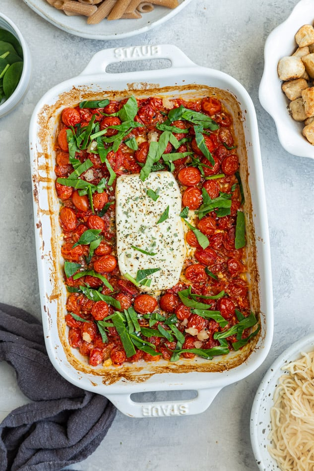

Feta Pasta Recipe
Everyone has heard of it by now-- commonly known as the Gigi Hadid Pasta, this easy and scrumdiliumptious
recipe has gone viral 3x over in the last several years. Someone on TikTok said that it was never just a
trend for them, and when they said that, they were talking about me. You probably already know how to make it too, but
here goes nothing.
Ingredients
- 8 oz of cherry tomatoes
- Block of feta cheese
- Pasta of choice
- Italian seasoning/herbs
- Olive oil
- Salt and peppers
How its Made
- Grab an oven-safe baking dish and coat the bottom in olive oil, salt, and pepper
- Dump in the cherry tomatoes
- Neslte the block of feta in the middle of the tomatoes
- Add a little more olive oil, salt, and pepper on top of the feta
- Stick the pan in the oven at 400 degrees fahrenheit and let it bake until the tomatoes are bursting open
- Once its done, stir everything around and use your heart to top it off with those Italian seasonings/herbs
- Add it to your pasta and bone ape the teeth!
The (nearly) finished product

Image from lifemadesweeter
Home